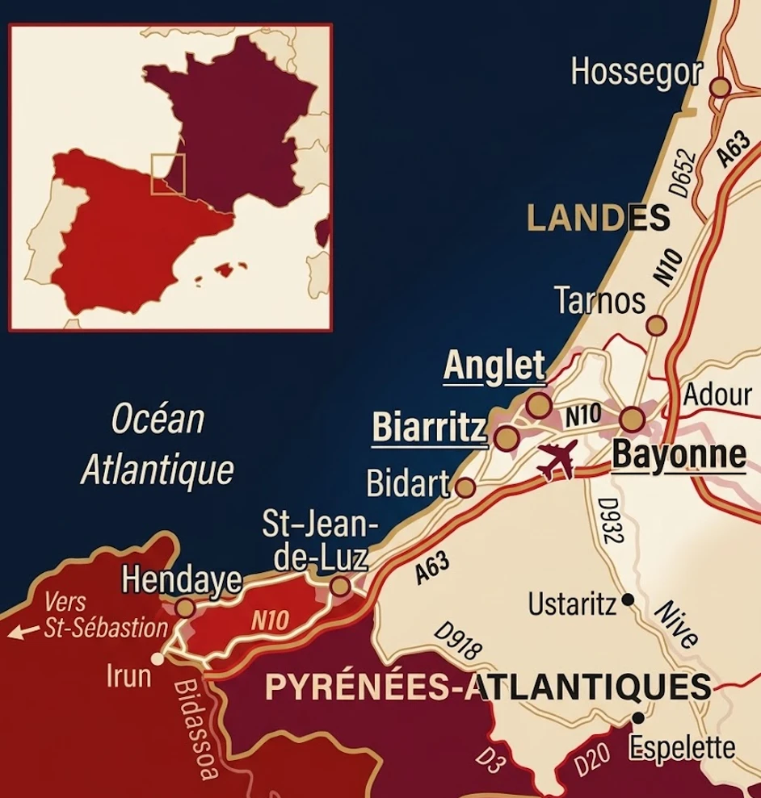

Transmettre ou vendre son entreprise au Pays Basque
Préparer votre cession
Définir vos objectifs financiers, projeter l’avenir de l’entreprise et choisir le type d’opération souhaité.
2Être mis en relation avec les bons interlocuteurs
Peu de conseils M&A sont installés sur le territoire. Nous vous orientons vers ceux qui le connaissent réellement.
3Réaliser la transaction
Négocier, mener les audits et signer votre opération dans les meilleures conditions.
Actualités de la finance d’entreprise au Pays Basque
Qui sont les acteurs du M&A au Pays Basque ?
Le territoire compte peu de cabinets de fusions-acquisitions installés sur place. Une partie des opérations est pilotée depuis Bordeaux, Pau ou Paris, par des équipes qui se déplacent pour les rendez-vous clés. Savoir qui est réellement présent, et qui ne l’est pas, change la conduite d’un dossier.
1
Quelle est votre situation ?
Je souhaite vendre la totalité de mon entreprise
Préparer une cession complète, de la valorisation au closing.
Je prépare mon départ à la retraite
Organiser la transmission dans un calendrier serein et confidentiel.
Je souhaite vendre seulement une partie du capital
Ouvrir le capital sans perdre le contrôle de la trajectoire.
Je cherche un repreneur pour mon commerce ou ma TPE
Identifier des repreneurs adaptés à votre activité et à votre taille.
Je veux transmettre l’entreprise à ma famille ou à mes salariés
Préparer une transmission familiale ou un rachat par le management.
Je suis approché par un groupe espagnol ou national
Évaluer une offre spontanée sans se placer en position de faiblesse.
2
Une plateforme pour les dirigeants basques
Euskal Finance n’est pas un cabinet de conseil parmi d’autres : c’est une plateforme dédiée qui accompagne les dirigeants du Pays Basque dans la vente ou la transmission de leur entreprise, quelle que soit sa taille.
Que vous dirigiez une conserverie, un hôtel de la côte, une entreprise de second œuvre, un négoce, un atelier de sous-traitance aéronautique ou une société de services à Bayonne, nous vous accompagnons avec la même exigence de préparation, de confidentialité et de mise en relation.
- Vente totale ou partielle d’une entreprise ou d’une PME
- Transmission d’une société familiale
- Vente d’un fonds de commerce ou d’une clientèle
- Cession d’une activité artisanale ou saisonnière
- Ouverture du capital à un investisseur
- Recherche d’un repreneur, stratégique, financier ou personne physique
- Transmission au management ou aux salariés
- Départ à la retraite du dirigeant
Nous intervenons auprès d’entreprises issues des filières qui structurent le territoire : agroalimentaire et salaison, conserverie, fromagerie, chocolat, glisse et équipement outdoor, tourisme, hôtellerie et thalassothérapie, santé, aéronautique et matériaux composites, bâtiment et second œuvre, négoce transfrontalier, logistique, numérique, agriculture et élevage de montagne, artisanat et métiers d’art.

3
Notre méthode, en 6 étapes
Une cession d’entreprise réussie se prépare généralement plusieurs mois avant la mise sur le marché. Euskal Finance structure votre projet autour d’un processus clair, rigoureux et confidentiel.
Avant même de lancer une opération, il est souvent utile de :
- Réduire la dépendance au dirigeant
- Sécuriser les principaux contrats clients
- Lisser l’effet de la saisonnalité dans les comptes
- Formaliser les processus internes
- Améliorer le reporting financier
- Documenter les revenus récurrents
- Clarifier la situation des murs et du bail
- Protéger les marques, recettes et savoir-faire
Cette préparation peut faciliter la vente, réduire les points de négociation et améliorer la valorisation finale. Vient ensuite le processus en six étapes :
-
Comprendre votre projet de cession
Nous commençons par analyser votre situation, vos motivations et vos objectifs. Souhaitez-vous vendre la totalité de votre entreprise, céder un fonds de commerce, préparer votre départ à la retraite, transmettre à vos salariés ou vous adosser à un groupe pour accélérer votre développement ?
Au Pays Basque, cette étape intègre souvent une dimension supplémentaire : le souhait, fréquent chez les dirigeants du territoire, que l’activité et les emplois restent sur place après la cession. C’est un critère légitime, qui se défend dans la négociation à condition d’être posé dès le départ.
-
Valoriser votre entreprise
La valorisation est une étape déterminante. Nous réalisons une analyse financière et stratégique afin d’estimer une fourchette de valeur réaliste, défendable et adaptée au marché. Cette évaluation prend notamment en compte le chiffre d’affaires et la rentabilité, l’EBE ou l’EBITDA retraité, la récurrence des revenus, le portefeuille clients, le positionnement concurrentiel, les perspectives de croissance, la dépendance au dirigeant, les actifs matériels et immatériels et les multiples observés dans votre secteur.
Deux paramètres pèsent particulièrement ici : la saisonnalité, qui doit être retraitée pour ne pas fausser la lecture d’un exercice, et le traitement des murs, dont la valeur immobilière sur la côte peut dépasser celle du fonds exploité.
-
Préparer un dossier de présentation convaincant
Nous préparons les documents nécessaires à la présentation de votre entreprise auprès des acquéreurs potentiels. Le dossier met en avant les forces de votre société, son modèle économique, ses performances financières, ses avantages concurrentiels et ses perspectives de développement.
Les informations sensibles sont communiquées progressivement et uniquement après la signature d’un engagement de confidentialité. Sur un territoire où beaucoup de dirigeants se connaissent, ce point n’est pas une formalité.
-
Identifier et approcher les meilleurs acquéreurs
Euskal Finance vous met en relation avec des acquéreurs correspondant au profil de votre entreprise : concurrents régionaux, groupes industriels, sociétés en croissance externe, repreneurs personnes physiques, managers internes ou investisseurs adaptés aux petites structures.
La frontière ouvre un second cercle d’acquéreurs, souvent négligé : les groupes du Guipuscoa et de Navarre, pour qui une implantation française constitue un relais de croissance naturel. Approcher ces acteurs suppose de préparer un dossier lisible en espagnol et d’anticiper leurs standards d’audit.
-
Organiser les offres et négocier la transaction
Nous analysons les manifestations d’intérêt et les offres reçues afin de comparer non seulement le prix proposé, mais également l’ensemble des conditions de la transaction. Nous vous accompagnons dans la négociation de la lettre d’intention, notamment sur :
- le prix de cession et les modalités de paiement ;
- les compléments de prix ;
- le niveau de trésorerie et d’endettement ;
- le sort des murs, en cession ou en bail ;
- la garantie d’actif et de passif ;
- la période d’accompagnement du dirigeant ;
- les conditions suspensives et le calendrier de réalisation ;
- les engagements de non-concurrence.
La mise en concurrence de plusieurs acquéreurs permet généralement d’améliorer le prix, de réduire les risques et de sécuriser les conditions de sortie, y compris lorsque la transaction porte sur un commerce, une petite société ou une activité saisonnière.
-
Piloter les audits jusqu’à la signature
Après la sélection d’un acquéreur, nous coordonnons le processus de due diligence avec vos conseils juridiques, fiscaux, sociaux et comptables. Nous restons présents jusqu’à la signature du protocole de cession et à la réalisation définitive de l’opération.
4
Pourquoi passer par Euskal Finance plutôt que seul ?
Une vente d’entreprise mobilise des compétences financières, stratégiques, commerciales, juridiques et humaines. Passer par la plateforme permet au dirigeant de continuer à gérer son activité tout en étant mis en relation avec les bons interlocuteurs pour structurer et piloter la transaction.
Notre accompagnement permet notamment de :
- Préparer l’entreprise avant sa mise en vente
- Déterminer une valorisation cohérente
- Présenter la société sous son meilleur angle
- Accéder à davantage d’acquéreurs qualifiés
- Élargir la recherche au-delà du bassin local
- Préserver la confidentialité de l’opération
- Créer une dynamique concurrentielle
- Négocier les meilleures conditions
- Anticiper les risques de rupture du processus
- Réduire la charge de travail du dirigeant
La confidentialité est essentielle lors d’une opération de cession : une diffusion prématurée de l’information peut inquiéter les salariés, fragiliser certaines relations commerciales ou alerter les concurrents. Sur un territoire de cette taille, une rumeur circule vite. Nous mettons en place un processus de vente contrôlé qui limite la circulation des informations sensibles : l’identité de votre entreprise n’est communiquée qu’aux acquéreurs sélectionnés, après validation de votre part et signature d’un accord de confidentialité.
5
Une expertise locale du marché basque
Le Pays Basque combine trois économies distinctes. Le BAB, autour de Bayonne, Anglet et Biarritz, concentre les sièges sociaux, les services, la santé et l’industrie, avec les zones d’activité de Bayonne et du Boucau et le pôle aéronautique et composites de Technocité. La côte, de Bidart à Hendaye, vit du tourisme, de l’hôtellerie, de la thalassothérapie, de la glisse et d’un commerce fortement saisonnier. L’intérieur, d’Ustaritz à Saint-Jean-Pied-de-Port et Mauléon-Licharre, porte l’agroalimentaire, l’élevage, l’artisanat et une industrie diffuse mais solide.
Ces trois bassins n’attirent pas les mêmes acquéreurs et ne se valorisent pas de la même façon. Une même rentabilité ne se paie pas au même prix selon qu’elle est saisonnière ou régulière, adossée à des murs ou locataire, dépendante du dirigeant ou structurée.
Nous intervenons sur l’ensemble du territoire : Bayonne, Anglet, Biarritz, Boucau, Bidart, Guéthary, Saint-Jean-de-Luz, Ciboure, Urrugne, Hendaye, Ustaritz, Cambo-les-Bains, Espelette, Hasparren, Saint-Palais, Saint-Jean-Pied-de-Port et Mauléon-Licharre.
Questions fréquentes sur la vente d’entreprise au Pays Basque
Comment vendre son entreprise au Pays Basque ?
La vente d’une entreprise commence par la définition des objectifs du dirigeant, la valorisation de la société et la préparation d’un dossier de présentation. Des acquéreurs qualifiés sont ensuite identifiés et approchés de manière confidentielle, sur le bassin local, au niveau national et, le cas échéant, de l’autre côté de la frontière. Les offres sont comparées avant la négociation et la réalisation des audits.
Mon activité est très saisonnière. Est-ce un handicap pour vendre ?
Non, à condition de la documenter. Une activité saisonnière se vend bien lorsque les comptes permettent d’isoler clairement la saison, de démontrer la régularité du modèle d’une année sur l’autre et d’expliquer la structure de coûts hors saison. Ce qui inquiète un acquéreur, ce n’est pas la saisonnalité, c’est l’impossibilité de la lire.
Dois-je vendre les murs en même temps que le fonds ?
Les deux options se défendent. Conserver les murs et consentir un bail à l’acquéreur permet de garder un revenu et de réduire le ticket d’entrée, donc d’élargir le nombre de repreneurs possibles. Vendre l’ensemble simplifie la sortie mais restreint le marché. Sur la côte basque, où la valeur immobilière est élevée, cet arbitrage est souvent le point le plus structurant de l’opération.
Un acquéreur espagnol peut-il reprendre mon entreprise ?
Oui, et c’est une piste régulièrement sous-exploitée. Des groupes du Guipuscoa et de Navarre cherchent des relais de croissance en France, et une entreprise basque française constitue pour eux une porte d’entrée naturelle. L’opération suppose de préparer une présentation lisible en espagnol et d’anticiper des exigences d’audit parfois différentes des usages français.
Combien de temps faut-il pour vendre une entreprise ?
Une opération de cession peut généralement nécessiter plusieurs mois. La durée varie selon la taille de l’entreprise, son secteur, sa préparation, le nombre d’acquéreurs potentiels et la complexité des négociations. Sur les activités saisonnières, le calendrier se cale souvent pour que le closing intervienne hors saison.
Comment calculer le prix de vente d’une entreprise ?
Le prix peut être estimé à partir de plusieurs méthodes : multiples d’EBE ou d’EBITDA, comparaison avec des transactions similaires, actualisation des flux de trésorerie ou valorisation des actifs. Le prix final dépend également de l’intérêt stratégique des acquéreurs et de la concurrence créée pendant le processus.
La vente de mon entreprise restera-t-elle confidentielle ?
Oui. Les acquéreurs sont contactés progressivement et les informations identifiantes ne sont communiquées qu’après la signature d’un engagement de confidentialité. Le dirigeant conserve un contrôle sur les entreprises et investisseurs approchés. Sur un territoire où les milieux économiques sont resserrés, ce contrôle est déterminant.
Puis-je exiger que l’activité reste au Pays Basque ?
Vous ne pouvez pas l’imposer indéfiniment, mais vous pouvez en faire un critère de sélection des acquéreurs, l’inscrire dans les échanges précontractuels et privilégier les profils dont le projet industriel suppose le maintien du site. Plus ce point est posé tôt, plus il pèse dans le choix final.
Confiez votre projet à la plateforme dédiée aux dirigeants basques
Vous avez consacré plusieurs années à construire et développer votre entreprise. Sa vente ou sa transmission mérite une préparation rigoureuse, une approche confidentielle et une mise en relation avec les bons interlocuteurs.
De la première réflexion jusqu’à la signature définitive, Euskal Finance vous accompagne à chaque étape de votre projet de vente ou de transmission d’entreprise au Pays Basque avec une exigence : protéger vos intérêts, préserver la confidentialité du projet et obtenir les meilleures conditions possibles.